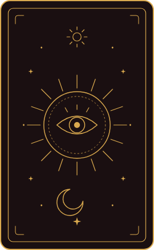

An Informative Tarot Reading of Digital Media
Draw a Card. Uncover a Concept.
Every card contains a concept about Vector Graphics and a short informative description and a special illustration. Unveil each card's secrets one by one and consume new knowledge about Digital Media. Click on the card to flip it and reveal it.
↓ Click a card to reveal its meaning
Two Ways to Store a Picture
Raster vs Vector
Every digital image is saved in one of two ways: as a grid of colored pixels, or as a set of drawing instructions. The difference is easy to miss at normal size and impossible to miss when you zoom in.
Raster
A raster image is a grid of pixels. The file stores one color value for every pixel, so its detail is fixed at the moment it is saved. Enlarging it cannot add detail: each pixel is simply drawn bigger, and the picture turns blocky.
- Stored as a grid of pixels
- File size grows with the number of pixels
- Formats PNG, JPG, WebP, GIF
- Best for photographs and detailed textures
Vector
A vector image is a list of shapes, paths and curves described by coordinates. The browser redraws those shapes from the math every time the size changes, so the edges stay sharp at any zoom level.
- Stored as shapes described by math
- File size grows with the number of shapes
- Formats SVG, Ai, EPS
- Best for logos, icons, diagrams and type
Zoom Test: One Card, Two Formats
1× is actual size. Each stored pixel covers one screen pixel, so the two cards look the same.

Where Compression Fits
Raster files hold so many pixel values that they are almost always compressed. Lossless compression, used by PNG, rebuilds every pixel exactly. Lossy compression, used by JPG, throws away detail the eye is less likely to notice. That makes much smaller files, but it can leave visible marks called artifacts. Vector files start out small because they store instructions instead of pixels, and because an SVG is plain text it shrinks further with lossless GZIP. The table below lists what each file on this page uses.
Technical Media Spec
| Asset Name & File Format | Original Size → Compressed | Color Depth / Quantization | Compression Algorithm |
|---|---|---|---|
| Card back (inline SVG, source file card-back.svg) | 3.3 KB → 1.1 KB gzipped | Vector (no bit depth) | Lossless (GZIP, DEFLATE) |
| card-back.png | 426.6 KB raw → 22.6 KB | 8-bit per channel + alpha (32-bit RGBA) | Lossless (PNG, DEFLATE) |
| geometric-primitives.png | 956.8 KB raw → 6.3 KB | 8-bit per channel + alpha (32-bit RGBA) | Lossless (PNG, DEFLATE) |
| bezier-curve.png | 1.03 MB raw → 70.6 KB | 8-bit per channel + alpha (32-bit RGBA) | Lossless (PNG, DEFLATE) |
| eps.png | 881.1 KB raw → 12.2 KB | 8-bit per channel + alpha (32-bit RGBA) | Lossless (PNG, DEFLATE) |
| ai.png | 454.2 KB raw → 29.5 KB | 8-bit per channel + alpha (32-bit RGBA) | Lossless (PNG, DEFLATE) |
| svg.png | 838.9 KB raw → 24.0 KB | 8-bit per channel + alpha (32-bit RGBA) | Lossless (PNG, DEFLATE) |
| swf.png | 284.8 KB raw → 11.6 KB | 8-bit per channel + alpha (32-bit RGBA) | Lossless (PNG, DEFLATE) |
| scale.png | 972.7 KB raw → 4.6 KB | 8-bit per channel + alpha (32-bit RGBA) | Lossless (PNG, DEFLATE) |
| rotate.png | 894.5 KB raw → 127.8 KB | 8-bit per channel + alpha (32-bit RGBA) | Lossless (PNG, DEFLATE) |
| translation.png | 1.03 MB raw → 16.6 KB | 8-bit per channel + alpha (32-bit RGBA) | Lossless (PNG, DEFLATE) |
| ambient-audio.mp3 (41:57, looped) | 461 MB as PCM → 38.4 MB | 16-bit, 48 kHz stereo | Lossy (MP3, 128 kbps, Huffman) |